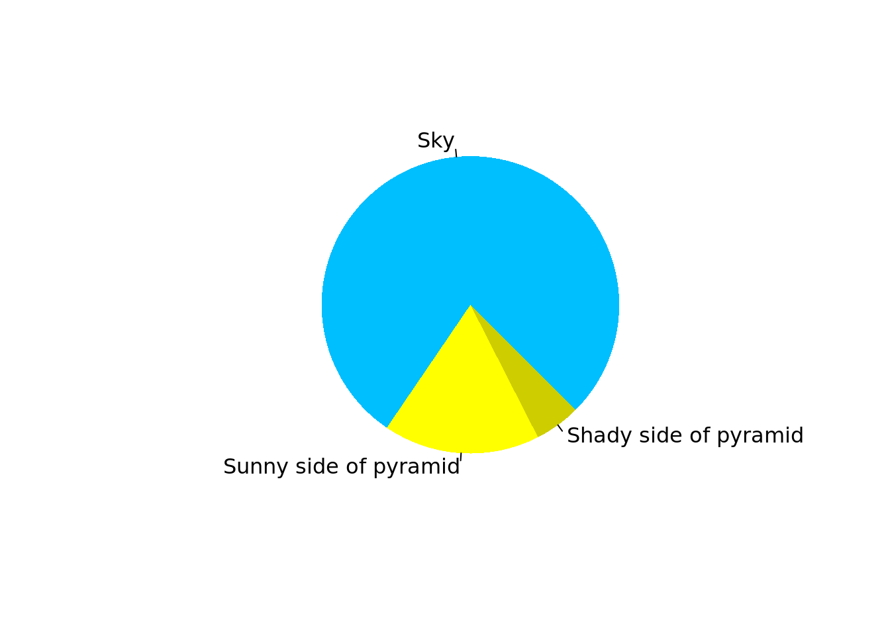
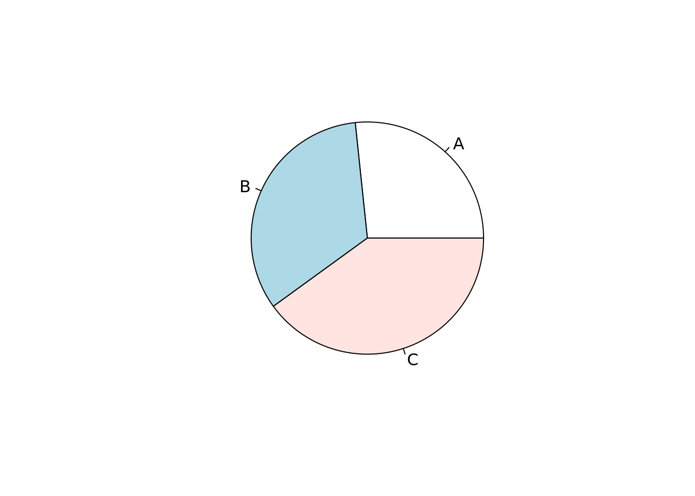
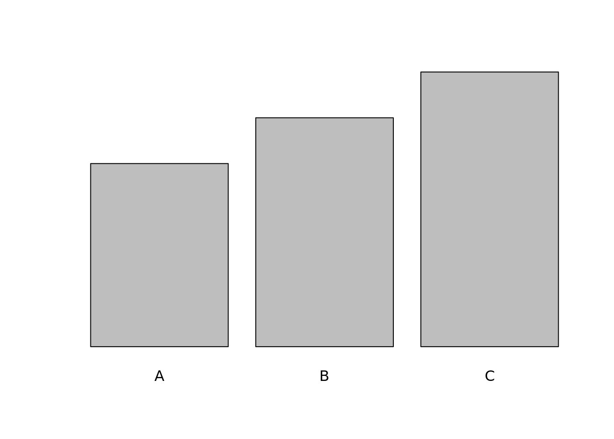
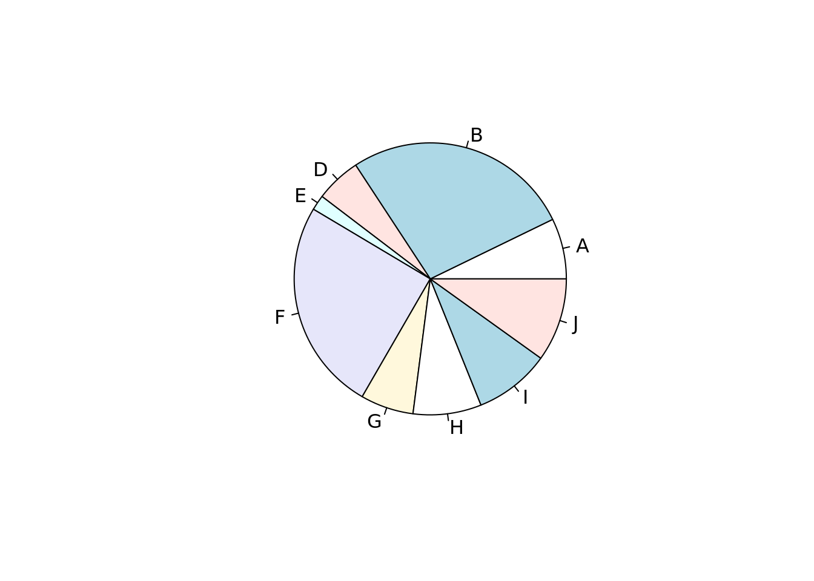
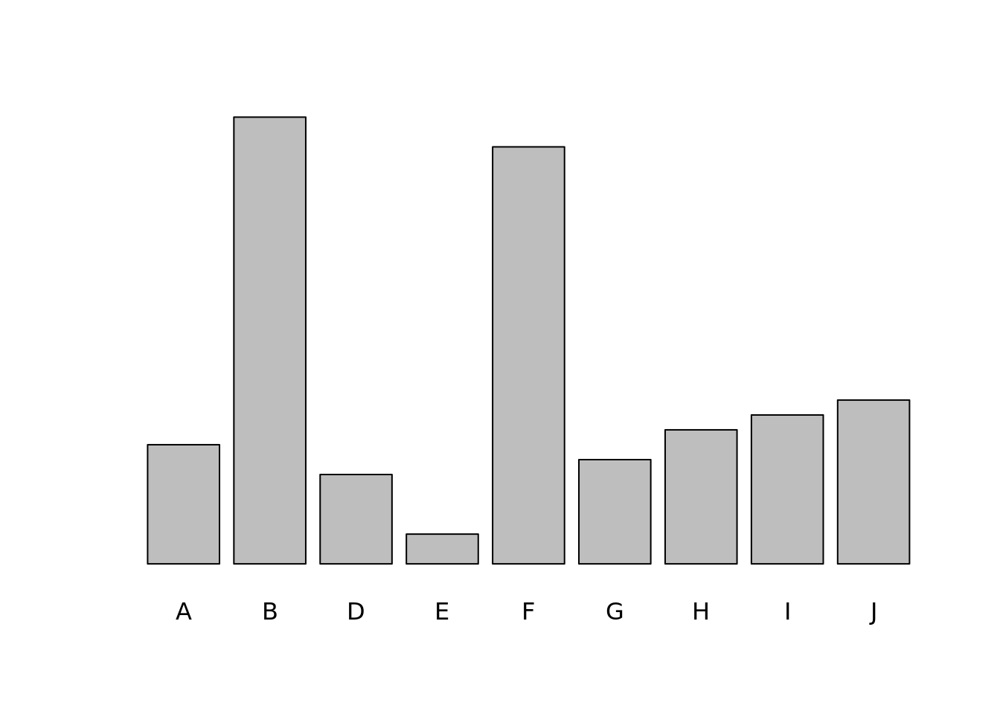
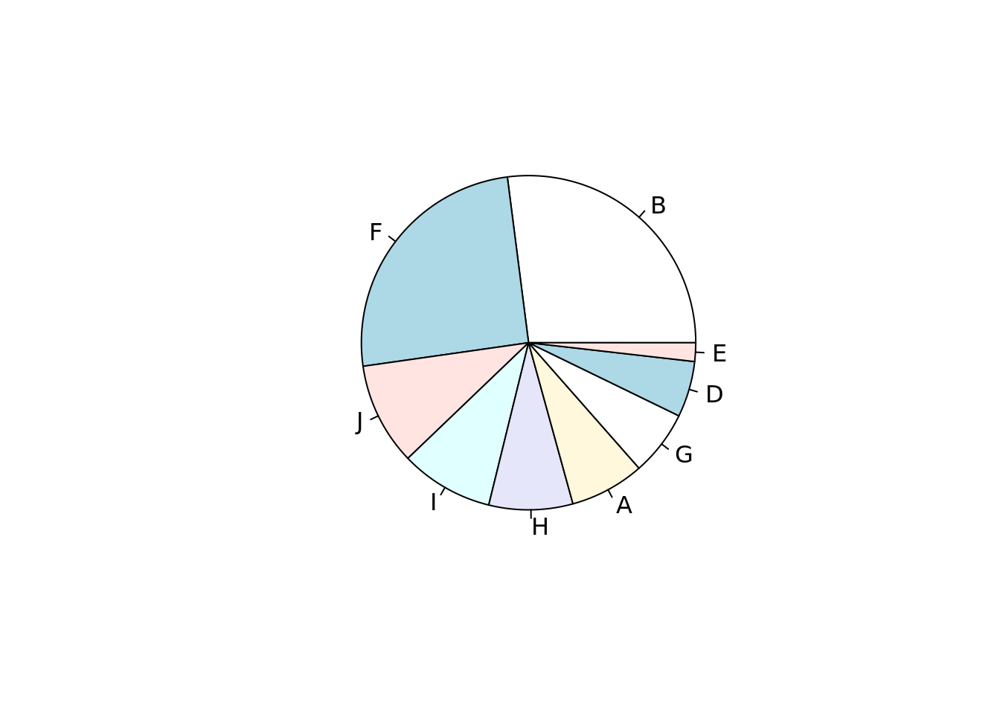
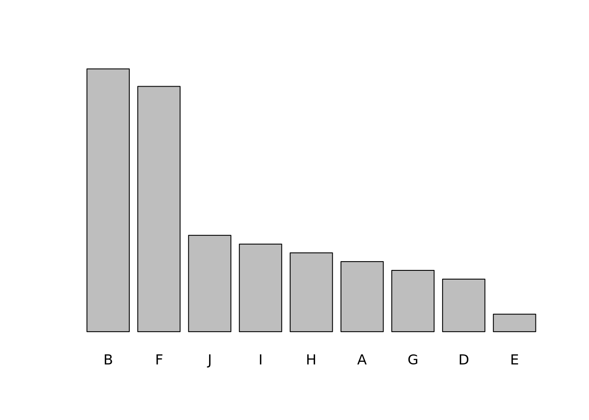
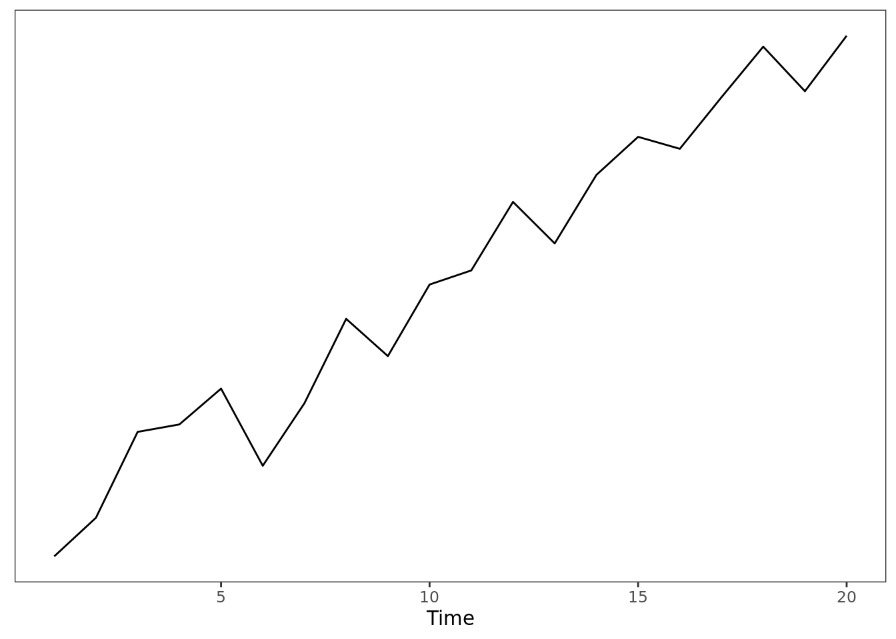
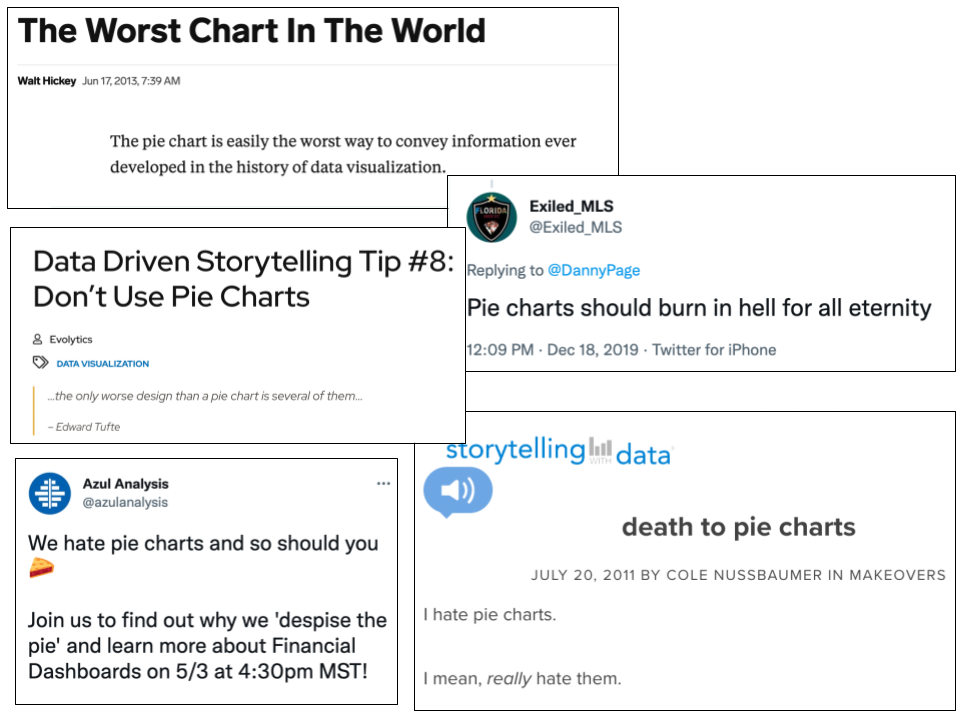

In R, if you run ?pie, you get a stern talking-to.
> ?pie
[...]
Note:
Pie charts are a very bad way of displaying information. The eye
is good at judging linear measures and bad at judging relative
areas. A bar chart or dot chart is a preferable way of displaying
this type of data.
Cleveland (1985), page 264: “Data that can be shown by pie charts
always can be shown by a dot chart. This means that judgements of
position along a common scale can be made instead of the less
accurate angle judgements.” This statement is based on the
empirical investigations of Cleveland and McGill as well as
investigations by perceptual psychologists.
Then it gives you some example code for drawing a cute pyramid.
## Another case showing pie() is rather fun than science:## (original by FinalBackwardsGlance on http://imgur.com/gallery/wWrpU4X)pie(c(Sky =78, "Sunny side of pyramid"=17, "Shady side of pyramid"=5),init.angle =315, col =c("deepskyblue", "yellow", "yellow3"), border =FALSE)

Are pie charts really only good for drawing pyramids?
The bad thing about pie charts
In a standard pie chart, you’re mapping some numbers onto angles of circular sectors. The mapping is such that the resulting angles are proportional to the numbers, and add to 360. This creates a bunch of circular sectors that all fit together into a complete circle.
pie(c(A =4, B =5, C =6))

What’s bad here is that sometimes people are not so good at comparing angles. For example, it may not be immediately obvious to a reader that C is larger then B in the above plot. Heights or lengths are much easier to visually distinguish between for most people.
barplot(c(A =4, B =5, C =6), yaxt ='n')

It gets worse the more values you have.

It’s not easy here to quickly rank these categories from largest to smallest, or to make pairwise comparisons. Compare to the bar chart with the same set of values.

You can make things a little bit better for the pie chart by putting the slices in decreasing order.

But as much as this helps the pie chart, it helps the bar chart even more.

Since pairwise comparison and ranking is easier with the bar chart, the bar chart is clearly better, right?
No! Not always! In some cases, pie charts are still good—and superior, in fact, to bar charts.
The good thing about pie charts
A data visualization is good insofar as it helps the reader efficiently perform relevant queries.
Warning: `qplot()` was deprecated in ggplot2 3.4.0.

A line graph is usually a good way to visualize a time series because helps the reader perform queries like
Where is the maximum of the series?
Where is the minimum?
Where is the fastest increase?
Where is the fastest decrease?
Does the series increase or decrease overall?
Of course, the line graph also fails for certain queries as well. For example, it doesn’t do very well at telling the reader what the average value is over a time period. If that’s an important query, you might want to use a different graph.
The bar chart is very good for certain common queries.
Which category is the biggest?
Which category is the smallest?
Is category X bigger or smaller than category Y?
However, there is a certain class of queries that the bar chart fails spectacularly at, and which the pie chart does very well. These are queries that involve quickly summing subsets of the categories and comparing the subsets.
About what fraction of the total is category B?
Do F and B together make up a majority of the total?
What’s the smallest set of categories that it takes to make up over two thirds of the total?
What’s larger: J, I and H together, or A, G, D, and E together?
Looking at the bar chart again, these queries are, in my opinion, basically impossible to answer at a glance. Pairwise comparisons are easy, but to add categories together requires the reader to mentally stack the boxes on top of each other, at which point the visualization itself is not helping very much. Compare to the pie chart.
We can instantly see at a glance that B and F are pretty close to a quarter each of the total, and that B and F together make up more than half of the total. While making fine comparisons between arbitrary angles might be hard, there are certain angle comparisons that are straightforward and automatic. I think the most intuitive of these is a comparison to 180 degrees, which corresponds to finding the majority of the pie. It’s easy and intuitive to see at a glance that the angle formed by B and F adds to more than 180. Similarly, by starting at the largest section and working around the pie clockwise, you can easily find the smallest set of categories that makes up any fraction you want—at least approximately (it helps that the slices are in descending order of size).
If you want to empower the reader to perform queries about the sizes of category subsets relative to the total, a pie chart is your best friend and a bar chart sucks.
It’s good to use pie charts when they are the right tool for the job
People get weirdly dogmatic about this stuff.

Whether a data visualization is useful is a function of whether it helps the reader perform the relevant queries at a glance. What those “relevant queries” are is a decision that the analyst has to make. Sometimes you want to provide quick pairwise comparisons between magnitudes, in which case a pie chart is probably unhelpful relative to a bar chart. Other times you want to group magnitudes together and compare the groups, in which case pie charts are great. Data visualization isn’t a neutral activity; authors create data visualizations to communicate, inform, and persuade. There’s no one-size-fits-all rule about the best or only way to do that.
It’s fine. Use pie charts. If anyone yells at you send them this post.